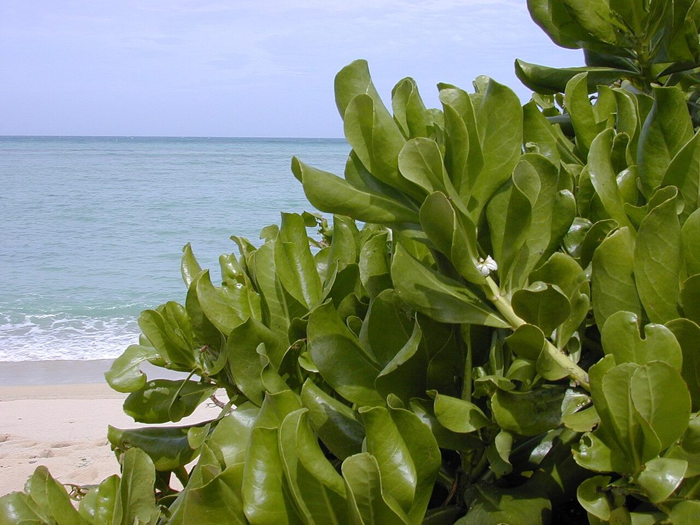
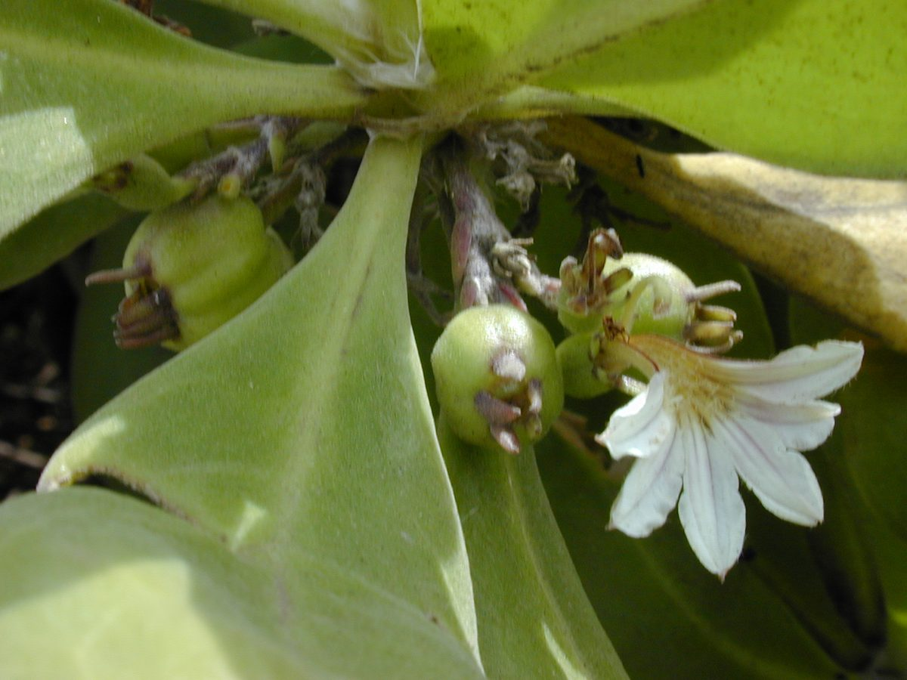
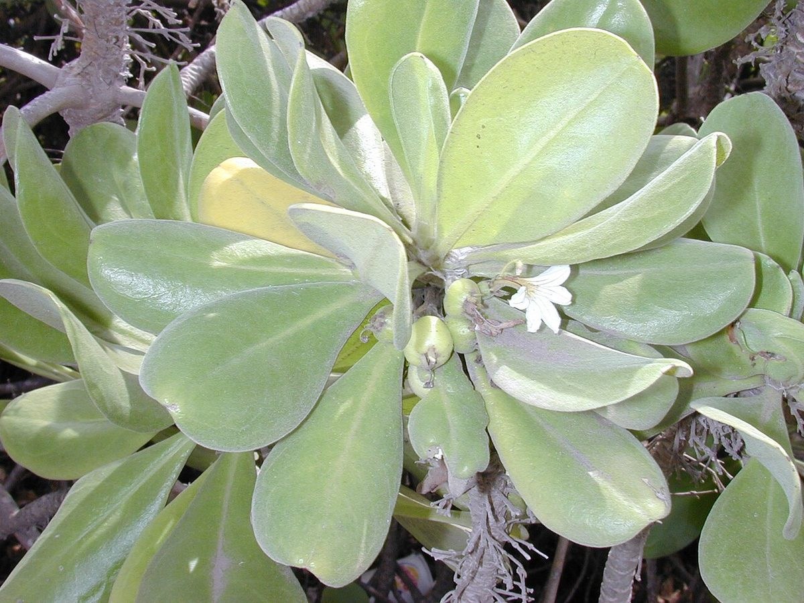

COMMON Beach strand Dune
Scaevola taccada
naupaka kahakai, naupaka · beach naupaka, half-flower, sea lettuce



Quick facts
| Family | Goodeniaceae |
|---|---|
| Scientific name | Scaevola taccada |
| Hawaiian name(s) | naupaka kahakai, naupaka |
| English name(s) | beach naupaka, half-flower, sea lettuce |
| Status | Indigenous (native, non-endemic) |
| Conservation | — |
| Coastal zones | Beach strand Dune |
| Occurrence | Dominant sprawling shrub on virtually every accessible Nā Pali beach berm (Kalalau, Honopū, Nuʻalolo Kai, Miloliʻi) and on the strand at Māhāʻulepū. The most-encountered coastal shrub on the roadless coast. |
How to identify
- Growth form
- Dense mounding-to-sprawling shrub, 1–3 m tall, often forming continuous hedges parallel to the beach.
- Size
- 1–3 m tall, forming clumps up to several metres across.
- Leaves
- Bright glossy green, thick and fleshy, obovate (widest near the tip), 3–20 cm long, clustered toward the branch tips in loose rosettes. Margins entire; venation obscure.
- Flowers
- White to pale purple, 1.5–2.5 cm, with all five petals arrayed on the lower half only — the "half-flower" — as if a normal flower had been torn down the middle. Borne singly or in small clusters at the leaf axils.
- Fruit / seed
- Small white succulent drupe about 1 cm across, buoyant, dispersed by ocean currents (which is how it circled the Indo-Pacific).
- Bark / stem
- Pale-grey pithy stems that snap easily; branches spread horizontally.
- Where it sits on the coast
- Immediately above the wrack line on sandy or gravelly beaches; also on low rocky headlands and stabilized dunes. Rarely more than 50 m inland.
Clinchers (features that lock the ID)
- Petals only on the lower half of the flower — no other Hawaiian coastal shrub does this.
- Glossy, thick, obovate leaves clustered at branch tips.
- White succulent drupe (not a dry capsule, not a berry pair).
- Dense mounding habit directly above the strand, forming natural hedges.
Look-alikes
- Scaevola gaudichaudiana / S. gaudichaudii and other native mountain naupaka — Also half-flowered, but they grow at mid- to high-elevation forest edges — not on the beach. If you are on sand or salt spray, you are looking at S. taccada.
- Heliotropium foertherianum (formerly Tournefortia argentea, tree heliotrope) — Bigger silvery-hairy leaves in a rosette at branch tips; small white five-radially-symmetric flowers in scorpioid cymes. Not half-flowered.
Ecology
Salt-tolerant halophyte whose buoyant fruits establish it as a pantropical strand shrub. On Nā Pali it stabilizes sand berms, provides shade for beach- crabs and juvenile seabirds, and forms the dominant strand community with pōhuehue (Ipomoea pes-caprae) and ʻakiʻaki (Sporobolus virginicus). [1], [2], [3], [6]
Cultural significance
In Hawaiian tradition the half-flower is remembered in the moʻolelo of two separated lovers — often told with a mountain naupaka and a beach naupaka each carrying half of a whole blossom. The plant is respected as a story- keeper of the shoreline rather than harvested for material use.